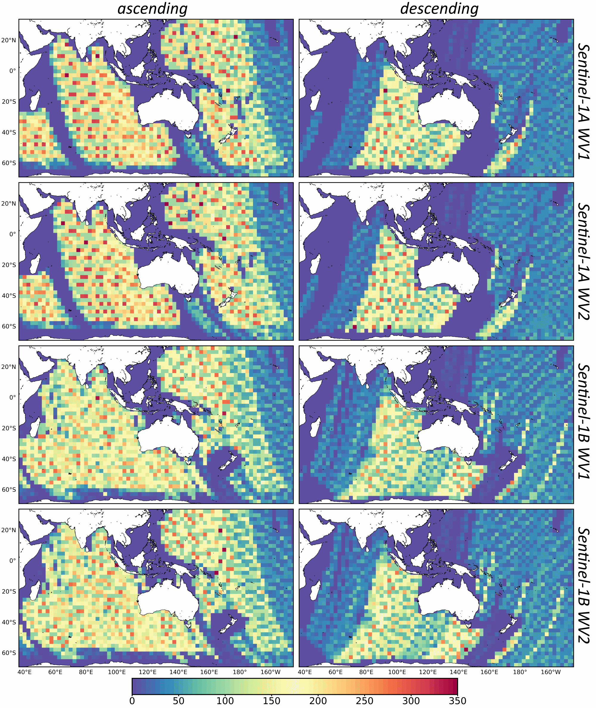

Wave measurements from SAR¶
This notebook is from Salman Khan and Emilio Echevarria, there is a great presentation about how they use synthetic aperture radar here.
About Sentinel-1 Ocean Surface Wave Measurements¶
Note
Sentinel-1 A and B satellites are part of Europe’s Copernicus programme and were launched in April 2014 and 2016, respectively.
The satellites fly in the same polar orbital plane, but 180° out of orbital phase, and offer a 6-day repeat cycle at the equator and more frequently at higher latitudes.
Both satellites are equipped with identical C-band SAR instruments, which can measure the directional wind-wave spectra for wavelengths longer than ~150m in azimuth direction. In the open ocean, they operate in wave mode (WV), measuring alternately in near-range with an incidence angle of ~23.5° (WV1) and far-range with an incidence angle of ~36.5° (WV2), and acquire 20 km x 20 km vignettes every 100 km along-track. Since they alternate between WV1 and WV2, consecutive vignettes for each incidence angle are 200 km apart.
In this notebook, we will use Sentinel-1 A and B SAR measurements over the Australasian region. The data is accesible through the AODN portal, or Thredds server.
The amount of data for each sattelite (A and B) for different wave modes (WV1 and WV2) and orbit’s direction (ascending or descending passes), allocated in 2.5°x2.5° bins looks like this:
{kind=link}
Imported Python packages¶
cartopy = 0.16.0
matplotlib = 2.2.2
numpy = 1.15.0
xarray = 0.11.3
wavespectra = 3.5.3
utility functions from utilfuncs.py
import os
import sys
import warnings
import cartopy.crs as ccrs
import matplotlib.pyplot as plt
import numpy as np
from wavespectra import SpecArray
import xarray as xr
from utilfuncs import k2f, ek2f, s1_compute_efth, cmap_wavespectra, plot_part
warnings.filterwarnings('ignore')
%matplotlib inline
%config InlineBackend.figure_format = 'svg'
plt.rcParams['mathtext.fontset'] = 'cm'
Daily along-track measurements¶
We will first read a daily along-track netCDF file and visualise selected measurements off Albany, WA on a map:
# Read and select measurements near South Australia
url = 'http://thredds.aodn.org.au/thredds/dodsC/IMOS/SRS/Surface-Waves/SAR/DELAYED/SENTINEL-1A/2019/08/IMOS_SRS-Surface-Waves_W_20190801T040752Z_Sentinel-1A_FV01_DM00_K2_END-20190801T220024Z.nc'+'#fillmismatch'
dset_s1 = xr.open_dataset(url, decode_times = True, decode_cf = True, mask_and_scale = True)
# Selecting the measurement close to Albany
dset_WA = dset_s1.isel(TIME = slice(384, 404))
# Plot measurement locations
fig = plt.figure(figsize = (10, 5), dpi = 100)
ax = plt.axes(projection = ccrs.PlateCarree(central_longitude = 195))
ax.coastlines()
ax.plot(dset_s1.LONGITUDE, dset_s1.LATITUDE, '.',
transform = ccrs.PlateCarree(), markersize = 1)
ax.plot(dset_WA.LONGITUDE, dset_WA.LATITUDE,
'r.', transform = ccrs.PlateCarree(), markersize = 3)
plt.show()
Auxialliary variables¶
We can plot some auxialliary variables such as the satellite measures along-track:
satellite heading
HEADINGincidence angle
INC_ANGLEdistance to coast
DIST2COAST, anddepth
BOT_DEPTH
To check the variables available we can do:
dset_WA
<xarray.Dataset>
Dimensions: (DIRECTION: 72, PARTITION: 5, TIME: 20, WAVNUM: 60)
Coordinates:
* DIRECTION (DIRECTION) float32 0.0 5.0 10.0 ... 345.0 350.0 355.0
* PARTITION (PARTITION) int8 0 1 2 3 4
* WAVNUM (WAVNUM) float32 0.005236 0.005574 ... 0.1967 0.2094
LATITUDE (TIME) float32 -53.57 -52.14 -51.87 ... -38.07 -36.74
LONGITUDE (TIME) float32 124.2 126.3 123.3 ... 119.7 117.3 119.1
* TIME (TIME) datetime64[ns] 2019-08-01T10:45:42.000000256...
Data variables: (12/17)
AZ_CUTOFF (TIME) float32 344.0 378.0 304.0 ... 220.0 210.0 236.0
HEADING (TIME) float32 341.0 339.1 341.7 ... 343.5 345.1 343.9
INC_ANGLE (TIME) float32 22.89 36.0 22.94 ... 36.36 23.29 36.41
NRCS (TIME) float32 -1.507 -10.63 -2.39 ... -7.262 -16.84
SNR (TIME) float32 30.75 27.38 29.15 ... 25.23 31.75 25.9
WDIR_ECMWF (TIME) float32 288.8 307.4 307.0 ... 358.5 1.01 40.07
... ...
DP_PART (TIME, PARTITION) float32 93.5 315.6 nan ... nan nan
EKTH (TIME, DIRECTION, WAVNUM) float32 362.2 419.6 ... 0.0
EKTH_PART (TIME, DIRECTION, WAVNUM) float32 1.0 1.0 ... nan nan
EKTH_quality_control (TIME, DIRECTION, WAVNUM) float32 2.0 2.0 ... nan nan
HS_PART (TIME, PARTITION) float32 3.398 2.14 nan ... nan nan
WP_PART (TIME, PARTITION) float32 269.2 561.9 nan ... nan nan
Attributes: (12/30)
Conventions: CF-1.6,IMOS-1.4
abstract: Sentinel-1 A and B satellites are part o...
acknowledgement: Any users of IMOS data are required to c...
author: Khan, Salman Saeed
author_email: salmansaeed.khan@csiro.au
citation: The citation in a list of references is:...
... ...
source: Copernicus Australasia
standard_name_vocabulary: NetCDF Climate and Forecast (CF) Metadat...
time_coverage_end: 2019-08-01T22:00:24Z
time_coverage_start: 2019-08-01T04:07:52Z
title: Sentinel-1 A C-SAR surface wave spectra
DODS_EXTRA.Unlimited_Dimension: TIME- DIRECTION: 72
- PARTITION: 5
- TIME: 20
- WAVNUM: 60
- DIRECTION(DIRECTION)float320.0 5.0 10.0 ... 345.0 350.0 355.0
- long_name :
- sea surface wave to direction, measured positive clockwise from due north
- standard_name :
- sea_surface_wave_to_direction
- units :
- degree
- valid_max :
- 355.0
- valid_min :
- 0.0
array([ 0., 5., 10., 15., 20., 25., 30., 35., 40., 45., 50., 55., 60., 65., 70., 75., 80., 85., 90., 95., 100., 105., 110., 115., 120., 125., 130., 135., 140., 145., 150., 155., 160., 165., 170., 175., 180., 185., 190., 195., 200., 205., 210., 215., 220., 225., 230., 235., 240., 245., 250., 255., 260., 265., 270., 275., 280., 285., 290., 295., 300., 305., 310., 315., 320., 325., 330., 335., 340., 345., 350., 355.], dtype=float32) - PARTITION(PARTITION)int80 1 2 3 4
- long_name :
- directional swell spectra partition
- valid_max :
- 4
- valid_min :
- 0
- units :
- 1
array([0, 1, 2, 3, 4], dtype=int8)
- WAVNUM(WAVNUM)float320.005236 0.005574 ... 0.1967 0.2094
- units :
- rad m-1
- valid_max :
- 0.2094395
- valid_min :
- 0.005235988
- long_name :
- wavenumber for polar spectra
array([0.005236, 0.005574, 0.005933, 0.006316, 0.006724, 0.007158, 0.007619, 0.008111, 0.008634, 0.009191, 0.009784, 0.010416, 0.011088, 0.011803, 0.012565, 0.013375, 0.014238, 0.015157, 0.016135, 0.017176, 0.018284, 0.019464, 0.020719, 0.022056, 0.023479, 0.024994, 0.026607, 0.028323, 0.030151, 0.032096, 0.034167, 0.036371, 0.038718, 0.041216, 0.043875, 0.046706, 0.04972 , 0.052927, 0.056342, 0.059977, 0.063847, 0.067966, 0.072352, 0.07702 , 0.081989, 0.087279, 0.09291 , 0.098904, 0.105286, 0.112079, 0.11931 , 0.127008, 0.135202, 0.143925, 0.153211, 0.163096, 0.173619, 0.184821, 0.196746, 0.20944 ], dtype=float32) - LATITUDE(TIME)float32-53.57 -52.14 ... -38.07 -36.74
- axis :
- Y
- long_name :
- latitude
- reference_datum :
- geographical coordinates, WGS84 projection
- standard_name :
- latitude
- units :
- degrees_north
- valid_max :
- 90.0
- valid_min :
- -90.0
- _ChunkSizes :
- 1116
array([-53.567394, -52.13989 , -51.866367, -50.454132, -50.158215, -48.762123, -48.444473, -47.060658, -46.728134, -45.35304 , -45.00377 , -43.63949 , -43.27489 , -41.922283, -41.541862, -40.19819 , -39.804512, -38.469566, -38.066673, -36.73708 ], dtype=float32) - LONGITUDE(TIME)float32124.2 126.3 123.3 ... 117.3 119.1
- axis :
- X
- long_name :
- longitude
- reference_datum :
- geographical coordinates, WGS84 projection
- standard_name :
- longitude
- units :
- degrees_east
- valid_max :
- 180.0
- valid_min :
- -180.0
- _ChunkSizes :
- 1116
array([124.22975 , 126.31904 , 123.266754, 125.30414 , 122.36848 , 124.34904 , 121.52737 , 123.460655, 120.72206 , 122.62525 , 119.97582 , 121.83676 , 119.26918 , 121.08331 , 118.59779 , 120.374466, 117.95761 , 119.69944 , 117.33325 , 119.05508 ], dtype=float32) - TIME(TIME)datetime64[ns]2019-08-01T10:45:42.000000256 .....
- axis :
- T
- long_name :
- time
- standard_name :
- time
- valid_max :
- 90000.0
- valid_min :
- 0.0
- _ChunkSizes :
- 1116
array(['2019-08-01T10:45:42.000000256', '2019-08-01T10:45:57.000000256', '2019-08-01T10:46:12.000000000', '2019-08-01T10:46:26.000000000', '2019-08-01T10:46:40.999999744', '2019-08-01T10:46:56.000000000', '2019-08-01T10:47:09.999999744', '2019-08-01T10:47:25.000000000', '2019-08-01T10:47:40.000000000', '2019-08-01T10:47:54.000000000', '2019-08-01T10:48:09.000000000', '2019-08-01T10:48:24.000000000', '2019-08-01T10:48:37.999999744', '2019-08-01T10:48:53.000000256', '2019-08-01T10:49:08.000000256', '2019-08-01T10:49:22.000000000', '2019-08-01T10:49:37.000000000', '2019-08-01T10:49:51.999999744', '2019-08-01T10:50:06.000000000', '2019-08-01T10:50:20.999999744'], dtype='datetime64[ns]')
- AZ_CUTOFF(TIME)float32...
- comment :
- the shortest wavelength in the azimuth direction that is resolved in the ocean swell spectra
- long_name :
- azimuth cut-off wavelength
- units :
- m
- _ChunkSizes :
- 1048576
array([344., 378., 304., 380., 294., 347., 300., 390., 303., 359., 295., 336., 281., 307., 252., 261., 208., 220., 210., 236.], dtype=float32) - HEADING(TIME)float32...
- long_name :
- satellite track heading clockwise relative to north
- standard_name :
- platform_course
- units :
- degree
- valid_max :
- 18000
- valid_min :
- -18000
- _ChunkSizes :
- 1116
array([341.01 , 339.12 , 341.66998, 339.84998, 342.26 , 340.52 , 342.78998, 341.13 , 343.28998, 341.69 , 343.72998, 342.2 , 344.13 , 342.66998, 344.49 , 343.09998, 344.83002, 343.5 , 345.14 , 343.87 ], dtype=float32) - INC_ANGLE(TIME)float32...
- long_name :
- incidence angle
- standard_name :
- angle_of_incidence
- units :
- degree
- valid_max :
- 9000
- valid_min :
- 0
- _ChunkSizes :
- 1116
array([22.89 , 36. , 22.939999, 36.05 , 23.01 , 36.07 , 23.07 , 36.12 , 23.039999, 36.17 , 23.109999, 36.23 , 23.17 , 36.25 , 23.24 , 36.3 , 23.31 , 36.36 , 23.289999, 36.41 ], dtype=float32) - NRCS(TIME)float32...
- comment :
- used in SAR wind retrieval algorithm and is also directly related to the dc-component of the image spectra
- long_name :
- normalised radar cross section of the imagette (dB)
- units :
- 1
- valid_max :
- 32000
- valid_min :
- -32000
- _ChunkSizes :
- 1116
array([ -1.507 , -10.634001, -2.39 , -11.200001, -2.657 , -11.517 , -2.866 , -11.576 , -2.929 , -12.027 , -3.132 , -13.189001, -3.846 , -15.603001, -5.62 , -16.929 , -7.093 , -16.869001, -7.262001, -16.839 ], dtype=float32) - SNR(TIME)float32...
- comment :
- spectral peak to noise ratio, used for setting the confidence of the wave retrieval
- long_name :
- signal to noise ratio of cross spectra (dB)
- units :
- 1
- valid_max :
- 30000
- valid_min :
- -30000
- _ChunkSizes :
- 1116
array([30.746 , 27.376 , 29.151 , 26.457 , 28.166 , 23.922 , 27.867 , 25.987 , 27.942 , 27.561 , 29.392 , 28.196 , 29.544 , 27.765999, 29.449 , 26.109 , 30.392 , 25.233 , 31.752 , 25.902 ], dtype=float32) - WDIR_ECMWF(TIME)float32...
- long_name :
- ecmwf wind from direction, measured positive clockwise from due north
- standard_name :
- wind_from_direction
- units :
- degree
- valid_max :
- 18000
- valid_min :
- -18000
- _ChunkSizes :
- 1116
array([288.84 , 307.38 , 307.02 , 306.45 , 307.09 , 304.41 , 305.45 , 302.15 , 305.74 , 301.94 , 304.22998 , 309.31 , 308.16 , 309.24 , 312.83002 , 336.41 , 349.13 , 358.53998 , 1.01001 , 40.070007], dtype=float32) - WSPD_ECMWF(TIME)float32...
- long_name :
- ecmwf wind speed
- standard_name :
- wind_speed
- units :
- m s-1
- valid_max :
- 6000
- valid_min :
- 0
- _ChunkSizes :
- 1116
array([17.52 , 19.609999, 19.96 , 18.369999, 18.97 , 17.029999, 18.109999, 15.889999, 15.509999, 13.78 , 14.58 , 11.67 , 11.49 , 9.17 , 8.62 , 5.91 , 5.72 , 5.39 , 5.85 , 6.15 ], dtype=float32) - DIST2COAST(TIME)float32...
- comment :
- source dist2coast_1deg_ocean.nc, 0.01-degree ocean grid, distributor PacIOOS, creator NASA/GSFC Ocean Color Group
- long_name :
- distance to nearest coastline
- units :
- km
- valid_max :
- 2700
- valid_min :
- 0
- _ChunkSizes :
- 1116
array([1353., 1530., 1537., 1705., 1702., 1599., 1503., 1399., 1303., 1198., 1105., 998., 906., 798., 709., 598., 513., 398., 323., 201.], dtype=float32) - BOT_DEPTH(TIME)float32...
- comment :
- source GEBCO 2019 grid with 15 arcsec resolution, DOI: 10.5285/836f016a-33be-6ddc-e053-6c86abc0788e
- long_name :
- sea_floor_depth_below_mean_sea_level
- positive :
- up
- reference_datum :
- Mean Sea Level (MSL)
- standard_name :
- sea_floor_depth_below_mean_sea_level
- units :
- m
- valid_max :
- 8845.0
- valid_min :
- -10924.0
- _ChunkSizes :
- 1116
array([-4632.872 , -4206.212 , -3964.402 , -3924.88 , -3534.594 , -3411.363 , -3993.561 , -4402.014 , -4353.312 , -4980.1865, -4189.9062, -4550.985 , -4535.3296, -4726.8237, -4916.2583, -4944.8374, -4877.609 , -4340.114 , -4767.0806, -5116.1313], dtype=float32) - LSMASK(TIME)float32...
- comment :
- sourced from the NAVOCEANO/GHRSST global 30 arcsec (~1km) land sea mask
- long_name :
- land sea mask in pixel distance. 1 to 49 coastal, 0 land, and -1 ocean with land-sea pixel distance > 49
- units :
- 1
- valid_max :
- 49
- valid_min :
- -1
- _ChunkSizes :
- 1116
array([-1., -1., -1., -1., -1., -1., -1., -1., -1., -1., -1., -1., -1., -1., -1., -1., -1., -1., -1., -1.], dtype=float32) - AZ_CUTOFF_DIR(TIME, DIRECTION)float32...
- comment :
- the spectral resolution of an ocean swell spectra cell is the shortest ocean wavelength that can be detected as a func of dir
- long_name :
- azimuth cut-off wavelength as a function of wave direction
- units :
- m
- _ChunkSizes :
- [ 1 72]
array([[325.27783, 314.28394, 300.89813, ..., 343.1662 , 339.77414, 333.79617], [353.16486, 340.0764 , 324.39972, ..., 376.0079 , 371.19922, 363.56552], [288.57 , 279.138 , 267.58157, ..., 303.48572, 300.79037, 295.80582], ..., [210.94073, 204.69237, 196.88618, ..., 219.92465, 218.58597, 215.58371], [202.97763, 197.51169, 190.54257, ..., 209.99936, 209.24532, 206.89879], [226.70943, 220.13232, 211.87988, ..., 235.95409, 234.65053, 231.56114]], dtype=float32) - DP_PART(TIME, PARTITION)float32...
- long_name :
- sea surface swell wave to direction at spectral peak
- standard_name :
- sea_surface_swell_wave_to_direction
- units :
- degree
- valid_max :
- 18000
- valid_min :
- -18000
- _ChunkSizes :
- [1 5]
array([[ 93.5 , 315.58002 , nan, nan, nan], [ 59.010002, 86.43 , 339.83002 , 29.680008, nan], [ 84.810005, 344.75 , nan, nan, nan], [ 56.700005, 86.58 , 314.9 , nan, nan], [ 91.67 , 51.440002, 330.47998 , nan, nan], [ 40.08 , 86.55 , 62.600006, 105.04 , nan], [ 64.69 , 90.97 , 335. , nan, nan], [ 59.450005, 49.79001 , 284.85 , 87.520004, nan], [ 40.29001 , 88.200005, 325.69 , nan, nan], [ 46.820007, 103.94 , 86.090004, 332.59 , nan], [ 57.200005, 325.34998 , 88.87 , nan, nan], [ 50.42 , 274.41998 , nan, nan, nan], [ 41.589996, 95.91 , nan, nan, nan], [ 45.880005, 269.51 , 332.52 , nan, nan], [ 50.440002, nan, nan, nan, nan], [ 54.780006, 146.44 , nan, nan, nan], [ 65.32 , 337.51 , nan, nan, nan], [ 70.700005, nan, nan, nan, nan], [ 46.910004, 82.840004, 340.3 , nan, nan], [ 56.870003, 104.71 , 322.97998 , nan, nan]], dtype=float32) - EKTH(TIME, DIRECTION, WAVNUM)float32...
- ancillary_variables :
- EKTH_quality_control
- long_name :
- estimated sea surface wave directional variance spectral density (wavenumber)
- units :
- m4
- valid_max :
- 3.4028235e+38
- valid_min :
- 0.0
- _ChunkSizes :
- [ 1 72 60]
array([[[362.19333 , 419.62308 , ..., 0. , 0. ], [342.0718 , 394.04578 , ..., 0. , 0. ], ..., [353.2868 , 419.2871 , ..., 0. , 0. ], [363.6985 , 428.9964 , ..., 0. , 0. ]], [[211.96814 , 256.95737 , ..., 0. , 0. ], [211.93633 , 251.7005 , ..., 0. , 0. ], ..., [210.56778 , 265.17276 , ..., 0. , 0. ], [212.91844 , 264.0774 , ..., 0. , 0. ]], ..., [[100.73115 , 104.91372 , ..., 0. , 0. ], [ 95.31837 , 97.2977 , ..., 0. , 0. ], ..., [105.33191 , 110.72164 , ..., 0. , 0. ], [103.21332 , 107.996925, ..., 0. , 0. ]], [[ 43.022877, 50.246128, ..., 0. , 0. ], [ 40.169117, 46.872 , ..., 0. , 0. ], ..., [ 48.393074, 56.649906, ..., 0. , 0. ], [ 45.92437 , 53.56814 , ..., 0. , 0. ]]], dtype=float32) - EKTH_PART(TIME, DIRECTION, WAVNUM)float32...
- long_name :
- directional wavenumber spectra partitions
- units :
- 1
- valid_max :
- 4
- valid_min :
- 0
- _ChunkSizes :
- [ 1 72 60]
array([[[ 1., 1., ..., nan, nan], [ 1., 1., ..., nan, nan], ..., [ 1., 1., ..., nan, nan], [ 1., 1., ..., nan, nan]], [[ 2., 2., ..., nan, nan], [ 2., 2., ..., nan, nan], ..., [ 2., 2., ..., nan, nan], [ 2., 2., ..., nan, nan]], ..., [[ 2., 2., ..., nan, nan], [ 2., 2., ..., nan, nan], ..., [ 2., 2., ..., nan, nan], [ 2., 2., ..., nan, nan]], [[ 0., 0., ..., nan, nan], [ 0., 0., ..., nan, nan], ..., [ 2., 2., ..., nan, nan], [ 0., 0., ..., nan, nan]]], dtype=float32) - EKTH_quality_control(TIME, DIRECTION, WAVNUM)float32...
- flag_meanings :
- No_QC_performed Good_data Probably_good_data Bad_data_that_are_potentially_correctable Bad_data Value_changed Not_used Not_used Not_used Missing_value
- flag_values :
- [0 1 2 3 4 5 6 7 8 9]
- long_name :
- estimated sea surface wave directional variance spectral density (wavenumber) flags
- quality_control_conventions :
- IMOS standard flags
- _ChunkSizes :
- [ 1 72 60]
array([[[ 2., 2., ..., nan, nan], [ 2., 2., ..., nan, nan], ..., [ 2., 2., ..., nan, nan], [ 2., 2., ..., nan, nan]], [[ 2., 2., ..., nan, nan], [ 2., 2., ..., nan, nan], ..., [ 2., 2., ..., nan, nan], [ 2., 2., ..., nan, nan]], ..., [[ 2., 2., ..., nan, nan], [ 2., 2., ..., nan, nan], ..., [ 2., 2., ..., nan, nan], [ 2., 2., ..., nan, nan]], [[ 2., 2., ..., nan, nan], [ 2., 2., ..., nan, nan], ..., [ 2., 2., ..., nan, nan], [ 2., 2., ..., nan, nan]]], dtype=float32) - HS_PART(TIME, PARTITION)float32...
- long_name :
- sea surface swell wave significant height
- standard_name :
- sea_surface_swell_wave_significant_height
- units :
- m
- valid_max :
- 30000
- valid_min :
- 0
- _ChunkSizes :
- [1 5]
array([[3.398, 2.14 , nan, nan, nan], [3.147, 2.838, 0.983, 0.945, nan], [3.291, 2.026, nan, nan, nan], [3.171, 2.397, 1.411, nan, nan], [1.975, 2.173, 1.816, nan, nan], [1.981, 1.858, 1.832, 1.466, nan], [2.082, 1.988, 1.903, nan, nan], [2.827, 1.684, 1.395, 1.59 , nan], [1.351, 2.581, 1.85 , nan, nan], [3.138, 1.167, 1.216, 0.62 , nan], [2.71 , 1.741, 1.299, nan, nan], [3.142, 2.186, nan, nan, nan], [2.978, 1.919, nan, nan, nan], [3.048, 2.151, 0.732, nan, nan], [3.608, nan, nan, nan, nan], [4.198, 0.723, nan, nan, nan], [3.611, 1.062, nan, nan, nan], [4.612, nan, nan, nan, nan], [2.728, 2.555, 1.474, nan, nan], [3.947, 2.026, 1.003, nan, nan]], dtype=float32) - WP_PART(TIME, PARTITION)float32...
- valid_min :
- 0.0
- long_name :
- sea surface swell wave wavelength at spectral peak
- valid_max :
- 20000.0
- units :
- m
- _ChunkSizes :
- [1 5]
array([[269.20004, 561.91077, nan, nan, nan], [236.13293, 236.71556, 595.04987, 638.49225, nan], [267.6647 , 526.45593, nan, nan, nan], [253.66452, 236.83485, 529.3775 , nan, nan], [222.63452, 283.87692, 468.02646, nan, nan], [342.34073, 198.22289, 213.3921 , 359.98657, nan], [236.47745, 206.76225, 468.1078 , nan, nan], [209.0458 , 372.90616, 341.63895, 182.49457, nan], [382.6946 , 194.38641, 559.8924 , nan, nan], [381.97314, 254.28645, 145.81831, 415.1764 , nan], [342.85168, 366.59036, 153.25696, nan, nan], [382.23434, 284.7964 , nan, nan, nan], [368.9713 , 354.23996, nan, nan, nan], [382.38904, 253.51135, 411.6424 , nan, nan], [384.47086, nan, nan, nan, nan], [323.36725, 306.07272, nan, nan, nan], [345.92288, 366.13443, nan, nan, nan], [364.60626, nan, nan, nan, nan], [345.28226, 346.73346, 342.4554 , nan, nan], [386.3217 , 360.1685 , 344.24002, nan, nan]], dtype=float32)
- Conventions :
- CF-1.6,IMOS-1.4
- abstract :
- Sentinel-1 A and B satellites are part of Europe's Copernicus Earth Observation program and carry identical C-band Synthetic Aperture Radar (SAR) instruments. Over open-ocean, they operate in wave mode and collect directional wave measurements globally. This dataset contains Sentinel-1 SAR directional ocean swell wave number spectra, spectral partitions and partition bulks in the Australasian region including the Pacific islands. The data have been homogenised to a single, easily usable format from inconsistent source product by removing various discrepancies such as inconsistencies in wave number bins and values, variables and erroneous measurements over land. The data have also been quality flagged by tagging spectral inversions where one or more of the partitions suffer from 180 degrees of swell directional ambiguity. According to the author's understanding, the source data have been produced by evolving versions of SAR ocean swell spectra inversion algorithm. This is a trial dataset and its cal/val is an area of current active research.
- acknowledgement :
- Any users of IMOS data are required to clearly acknowledge the source of the material derived from IMOS in the format: "Data was sourced from the Integrated Marine Observing System (IMOS) - IMOS is a national collaborative research infrastructure, supported by the Australian Government." If relevant, also credit other organisations involved in collection of this particular datastream (as listed in 'credit' in the metadata record).
- author :
- Khan, Salman Saeed
- author_email :
- salmansaeed.khan@csiro.au
- citation :
- The citation in a list of references is: "IMOS [year-of-data-download], [Title], [data-access-URL], accessed [date-of-access].".
- data_centre :
- Australian Ocean Data Network (AODN)
- data_centre_email :
- info@aodn.org.au
- date_created :
- 2019-12-11T16:06:50Z
- date_modified :
- 2019-12-11T16:06:50Z
- disclaimer :
- Data, products and services from IMOS are provided "as is" without any warranty as to fitness for a particular purpose.
- geospatial_lat_max :
- 54.878338
- geospatial_lat_min :
- -73.9985
- geospatial_lon_max :
- 179.81264
- geospatial_lon_min :
- -179.82607
- geospatial_vertical_max :
- 0.0
- geospatial_vertical_min :
- 0.0
- geospatial_vertical_negative :
- down
- institution :
- CSIRO
- license :
- http://creativecommons.org/licenses/by/4.0/
- naming_authority :
- IMOS
- principal_investigator :
- Hemer, Mark
- principal_investigator_email :
- mark.hemer@csiro.au
- project :
- Integrated Marine Observing System (IMOS)
- source :
- Copernicus Australasia
- standard_name_vocabulary :
- NetCDF Climate and Forecast (CF) Metadata Convention Standard Name Table 65
- time_coverage_end :
- 2019-08-01T22:00:24Z
- time_coverage_start :
- 2019-08-01T04:07:52Z
- title :
- Sentinel-1 A C-SAR surface wave spectra
- DODS_EXTRA.Unlimited_Dimension :
- TIME
Let’s plot the aforementionned variables
fig = plt.figure(figsize = (7.5, 3))
ax = plt.subplot(111)
dset_WA.HEADING.plot(ax = ax, lw=2, c='r')
plt.title('Heading')
plt.grid(linestyle = 'dashed')
fig = plt.figure(figsize = (7.5, 3))
ax = plt.subplot(111)
dset_WA.INC_ANGLE.plot(ax = ax, lw=2, c='b')
plt.title('Incidence Angle')
plt.grid(linestyle = 'dashed')
fig = plt.figure(figsize = (7.5, 3))
ax = plt.subplot(111)
dset_WA.DIST2COAST.plot(ax = ax, lw=2, c='k')
plt.title('Distance to coast')
plt.grid(linestyle = 'dashed')
fig = plt.figure(figsize = (7.5, 3))
ax = plt.subplot(111)
dset_WA.BOT_DEPTH.plot(ax = ax, lw=2, c='g')
plt.title('Depth')
plt.grid(linestyle = 'dashed')
Frequency spectra conversion¶
We will now convert directional wavenumber spectra to frequency spectra using deep water assumptions:
efth - spectral variance density - units m2.s.deg-1
# compute efth
dset_WA_ws = dset_WA.assign(efth = s1_compute_efth(dset_WA))
Plot some wave statistics derived from directional frequency spectra:¶
swell significant height
mean period - Tm02
mean wave direction
Note
A directional wave spectrum describes how the wave energy (more specifically, the variance spectral density) is distributed over frequencies (or wavenumbers) and directions. For a detailed description of wave spectra, its uses and applications, and the transformations from wavenumber to frequency spectra, see: Holthuijsen, L. (2007). Waves in Oceanic and Coastal Waters. Cambridge: Cambridge University Press. https://doi.org/10.1017/CBO9780511618536
It is very common to describe the wave climate with integrated (also called bulk) wave parameters, instead of with a directional wave spectra. These parameters represent average conditions of the wave climate.
# plot stats
# hs
fig = plt.figure(figsize = (7.5, 3))
ax = plt.subplot(111)
dset_WA_ws.spec.hs(tail = True).plot(ax = ax)
plt.title('Swell significant wave height')
plt.grid(linestyle = 'dashed')
# tm02
fig = plt.figure(figsize = (7.5, 3))
ax = plt.subplot(111)
dset_WA_ws.spec.tm02().plot(ax = ax)
plt.title('Mean period - Tm02')
plt.grid(linestyle = 'dashed')
# dm
fig = plt.figure(figsize = (7.5, 3))
ax = plt.subplot(111)
dset_WA_ws.spec.dm().plot(ax = ax)
plt.ylabel('Mean wave to direction $(^\circ)$')
plt.title('Mean wave direction')
plt.grid(linestyle = 'dashed')
plt.show()

Visualise directional frequency spectra:¶
1st directional spectra
all directional spectra
all omni-directional spectra
# plot 1st directional spectra
cmap = cmap_wavespectra(n = 64)
qcs = (dset_WA_ws
.isel(time = 0)
.spec
.plot
.contourf(cmap = cmap,
as_period = True,
as_log10 = False,
show_direction_label = True,
levels = cmap.N,
figsize = (7.5, 7.5),
robuts = True))
angle_labels = ['N', 'NE', 'E', 'SE', 'S', 'SW', '','NW']
qcs.ax.set_rlabel_position(180 + 45)
qcs.ax.set_ylim(0, 30)#set_rmax(30)
qcs.ax.set_thetagrids(angles = range(0, 360, 45),
labels = angle_labels)
(<a list of 16 Line2D ticklines objects>,
[Text(0.0, 0, 'N'),
Text(0.7853981633974483, 0, 'NE'),
Text(1.5707963267948966, 0, 'E'),
Text(2.356194490192345, 0, 'SE'),
Text(3.141592653589793, 0, 'S'),
Text(3.9269908169872414, 0, 'SW'),
Text(4.71238898038469, 0, ''),
Text(5.497787143782138, 0, 'NW')])
## plot all directional spectra
ncols = 4
fg = (dset_WA_ws
.efth
.spec
.plot
.contourf(col = "time", col_wrap = ncols, cmap = cmap,
as_period = True, as_log10 = False,
show_direction_label = True, levels = cmap.N,
robuts = True, size = 3, aspect = 1))
angle_labels = ['N', 'NE', 'E', 'SE', 'S', 'SW', 'W','NW']
for i, ax in enumerate(fg.axes.flat):
ax.set_rlabel_position(180 + 45)
ax.set_ylim(0, 30)#set_rmax(30)
ax.set_thetagrids(angles = range(0, 360, 45),
labels = angle_labels)
fg.set_titles(pad = 15)
fg.set_ylabels('Wave period [s]', labelpad = 20)
fg.set_xlabels('Wave to direction [$^\circ$]', labelpad = 0)
fg.cbar.set_label('Variance density [$m^2 s deg{-1}$]', labelpad = 10)
Error in callback <function flush_figures at 0x7f9a8d2df8c8> (for post_execute):
---------------------------------------------------------------------------
KeyboardInterrupt Traceback (most recent call last)
/usr/share/miniconda/envs/coast/lib/python3.6/site-packages/ipykernel/pylab/backend_inline.py in flush_figures()
118 # ignore the tracking, just draw and close all figures
119 try:
--> 120 return show(True)
121 except Exception as e:
122 # safely show traceback if in IPython, else raise
/usr/share/miniconda/envs/coast/lib/python3.6/site-packages/ipykernel/pylab/backend_inline.py in show(close, block)
40 display(
41 figure_manager.canvas.figure,
---> 42 metadata=_fetch_figure_metadata(figure_manager.canvas.figure)
43 )
44 finally:
/usr/share/miniconda/envs/coast/lib/python3.6/site-packages/IPython/core/display.py in display(include, exclude, metadata, transient, display_id, *objs, **kwargs)
311 publish_display_data(data=obj, metadata=metadata, **kwargs)
312 else:
--> 313 format_dict, md_dict = format(obj, include=include, exclude=exclude)
314 if not format_dict:
315 # nothing to display (e.g. _ipython_display_ took over)
/usr/share/miniconda/envs/coast/lib/python3.6/site-packages/IPython/core/formatters.py in format(self, obj, include, exclude)
178 md = None
179 try:
--> 180 data = formatter(obj)
181 except:
182 # FIXME: log the exception
<decorator-gen-9> in __call__(self, obj)
/usr/share/miniconda/envs/coast/lib/python3.6/site-packages/IPython/core/formatters.py in catch_format_error(method, self, *args, **kwargs)
222 """show traceback on failed format call"""
223 try:
--> 224 r = method(self, *args, **kwargs)
225 except NotImplementedError:
226 # don't warn on NotImplementedErrors
/usr/share/miniconda/envs/coast/lib/python3.6/site-packages/IPython/core/formatters.py in __call__(self, obj)
339 pass
340 else:
--> 341 return printer(obj)
342 # Finally look for special method names
343 method = get_real_method(obj, self.print_method)
/usr/share/miniconda/envs/coast/lib/python3.6/site-packages/IPython/core/pylabtools.py in <lambda>(fig)
252 jpg_formatter.for_type(Figure, lambda fig: print_figure(fig, 'jpg', **kwargs))
253 if 'svg' in formats:
--> 254 svg_formatter.for_type(Figure, lambda fig: print_figure(fig, 'svg', **kwargs))
255 if 'pdf' in formats:
256 pdf_formatter.for_type(Figure, lambda fig: print_figure(fig, 'pdf', **kwargs))
/usr/share/miniconda/envs/coast/lib/python3.6/site-packages/IPython/core/pylabtools.py in print_figure(fig, fmt, bbox_inches, **kwargs)
130 FigureCanvasBase(fig)
131
--> 132 fig.canvas.print_figure(bytes_io, **kw)
133 data = bytes_io.getvalue()
134 if fmt == 'svg':
/usr/share/miniconda/envs/coast/lib/python3.6/site-packages/matplotlib/backend_bases.py in print_figure(self, filename, dpi, facecolor, edgecolor, orientation, format, bbox_inches, pad_inches, bbox_extra_artists, backend, **kwargs)
2194
2195 bbox_inches = self.figure.get_tightbbox(
-> 2196 renderer, bbox_extra_artists=bbox_extra_artists)
2197 if pad_inches is None:
2198 pad_inches = rcParams['savefig.pad_inches']
/usr/share/miniconda/envs/coast/lib/python3.6/site-packages/matplotlib/figure.py in get_tightbbox(self, renderer, bbox_extra_artists)
2504
2505 for a in artists:
-> 2506 bbox = a.get_tightbbox(renderer)
2507 if bbox is not None and (bbox.width != 0 or bbox.height != 0):
2508 bb.append(bbox)
/usr/share/miniconda/envs/coast/lib/python3.6/site-packages/matplotlib/artist.py in get_tightbbox(self, renderer)
284 if clip_path is not None and bbox is not None:
285 clip_path = clip_path.get_fully_transformed_path()
--> 286 bbox = Bbox.intersection(bbox, clip_path.get_extents())
287 return bbox
288
/usr/share/miniconda/envs/coast/lib/python3.6/site-packages/matplotlib/path.py in get_extents(self, transform, **kwargs)
597 for curve, code in self.iter_bezier(**kwargs):
598 # places where the derivative is zero can be extrema
--> 599 _, dzeros = curve.axis_aligned_extrema()
600 # as can the ends of the curve
601 xys.append(curve([0, *dzeros, 1]))
/usr/share/miniconda/envs/coast/lib/python3.6/site-packages/matplotlib/bezier.py in axis_aligned_extrema(self)
296 roots = []
297 for i, pi in enumerate(dCj.T):
--> 298 r = np.roots(pi[::-1])
299 roots.append(r)
300 dims.append(np.full_like(r, i))
<__array_function__ internals> in roots(*args, **kwargs)
/usr/share/miniconda/envs/coast/lib/python3.6/site-packages/numpy/lib/polynomial.py in roots(p)
241 A = diag(NX.ones((N-2,), p.dtype), -1)
242 A[0,:] = -p[1:] / p[0]
--> 243 roots = eigvals(A)
244 else:
245 roots = NX.array([])
<__array_function__ internals> in eigvals(*args, **kwargs)
/usr/share/miniconda/envs/coast/lib/python3.6/site-packages/numpy/linalg/linalg.py in eigvals(a)
1061 _assert_stacked_2d(a)
1062 _assert_stacked_square(a)
-> 1063 _assert_finite(a)
1064 t, result_t = _commonType(a)
1065
/usr/share/miniconda/envs/coast/lib/python3.6/site-packages/numpy/linalg/linalg.py in _assert_finite(*arrays)
206 def _assert_finite(*arrays):
207 for a in arrays:
--> 208 if not isfinite(a).all():
209 raise LinAlgError("Array must not contain infs or NaNs")
210
/usr/share/miniconda/envs/coast/lib/python3.6/site-packages/numpy/core/_methods.py in _all(a, axis, dtype, out, keepdims)
55
56 def _all(a, axis=None, dtype=None, out=None, keepdims=False):
---> 57 return umr_all(a, axis, dtype, out, keepdims)
58
59 def _count_reduce_items(arr, axis):
KeyboardInterrupt:
# plot all omni-directional spectra
ncols = 4
fg = dset_WA_ws.spec.oned().plot.line(col = 'time', col_wrap = ncols)
fg.set_axis_labels(y_var = 'var. spec. density ($m^2s/deg$)')
for i, ax in enumerate(fg.axes.flat):
ax.grid(True)
Visualise directional frequency spectra swell partitions:¶
paritions of first directional spectrum
partitions of all directional spectra
# plot partitions for 1st 2d spectrum
fig = plot_part(dset_WA_ws.EKTH_PART.isel(TIME = 0))
# plot partitions for all 2d spectra
fig = plot_part(dset_WA_ws.EKTH_PART)

Plot some primary swell wave statistics:¶
# plot primary swell stats
# swell height
fig = plt.figure(figsize = (7.5, 3))
ax = plt.subplot(111)
dset_WA_ws.HS_PART.isel(PARTITION = 0).plot()
plt.title('Primary swell significant height')
plt.grid(linestyle = 'dashed')
# direction at spectral peak
fig = plt.figure(figsize = (7.5, 3))
ax = plt.subplot(111)
dset_WA_ws.DP_PART.isel(PARTITION = 0).plot()
plt.title('Primary swell peak direction')
plt.grid(linestyle = 'dashed')
# wavelength at spectral peak
fig = plt.figure(figsize = (7.5, 3))
ax = plt.subplot(111)
dset_WA_ws.WP_PART.isel(PARTITION = 0).plot()
plt.title('Primary swell peak wavelength')
plt.grid(linestyle = 'dashed')